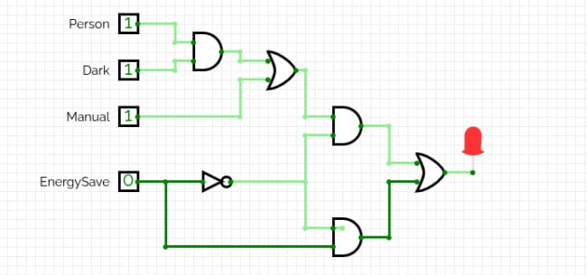

What Problem Are We Solving?
- 💡 Lights left ON in empty rooms waste energy daily — a small but real global problem
- 🏠 Manual switching is inconvenient and often forgotten
- ⚡ No smart logic = no context-awareness (dark? occupied? saving mode?)
- 🔘 Existing smart systems are complex and expensive — we model the core logic simply
Our Solution: A rule-based digital circuit that decides light state from
4 room conditions, implemented in combinational logic.
💡
Simple digital logic can solve real-world energy problems
How It Works — Inputs
4 Binary Inputs
Input Signals
Person DetectedP
Room DarkD
Manual SwitchM
Energy SavingE
Output
Light (LED)L
Each signal is binary:
0 = OFF / absent
1 = ON / present
0 = OFF / absent
1 = ON / present
16 total combinations — 4 inputs × 2 states each = 2⁴ = 16 rows in the truth table
🏠
P · D → AND
M → OR
E → NOT
→ LED
How It Works — Decision Rules
Core Logic Rules
- Light turns ON if person is present AND room is dark
- Light turns ON if Manual switch is forced ON
- In Energy Saving Mode → light only turns ON if person is present
- Manual switch overridden by Energy Saving when no person detected
Result: Context-aware lighting — no unnecessary power draw, respects user override, enforces saving mode when enabled.
IF P=1 AND D=1 → Light ON
IF M=1 → Light ON
IF E=1 AND P=0 → Light OFF
IF E=1 AND P=1 → Light ON
Plain-English rule summary
before formalizing into Boolean logic
before formalizing into Boolean logic
The Logic Behind the Switch
Boolean Expression
$$L = \bigl(((P\land D)\lor M)\land\lnot E\bigr)\lor (P\land E)$$
Gates Used
AND P · D — person & dark
AND P · E — person & saving
OR (P·D) + M
NOT Invert E signal
AND OR result · ¬E
OR Final output gate
5+ gates total
· 2× AND (inputs)
· 1× OR (first branch)
· 1× NOT (energy)
· 1× AND (branch 1 gate)
· 1× OR (final merge)
Combinational logic only —
no clock, no memory, no flip-flops
no clock, no memory, no flip-flops
Truth Table — All 16 Input Combinations
| Person (P) | Dark (D) | Manual (M) | EnergySave (E) | Light Output |
|---|---|---|---|---|
| 0 | 0 | 0 | 0 | 0 |
| 0 | 0 | 0 | 1 | 0 |
| 0 | 0 | 1 | 0 | 1 |
| 0 | 0 | 1 | 1 | 0 |
| 0 | 1 | 0 | 0 | 0 |
| 0 | 1 | 0 | 1 | 0 |
| 0 | 1 | 1 | 0 | 1 |
| 0 | 1 | 1 | 1 | 0 |
| 1 | 0 | 0 | 0 | 0 |
| 1 | 0 | 0 | 1 | 1 |
| 1 | 0 | 1 | 0 | 1 |
| 1 | 0 | 1 | 1 | 1 |
| 1 | 1 | 0 | 0 | 1 |
| 1 | 1 | 0 | 1 | 1 |
| 1 | 1 | 1 | 0 | 1 |
| 1 | 1 | 1 | 1 | 1 |
■ Green = Light ON (9 cases)
■ Red = Light OFF (7 cases)
Circuit in Action — CircuitVerse Simulation
Simulation Details
- Full working simulation built in CircuitVerse
- 4 labeled inputs: Person, Dark, Manual, EnergySave
- Output: LED indicator (lights up = ON)
- Gates used: AND, OR, NOT — 5+ gates total
Verified: All 16 combinations tested against the truth table — 100% match.

Smart Room Light Controller — CircuitVerse Simulation
See It Live
Full interactive demo — toggle all 4 inputs and see the light output update in real time
▶ Try It Now
https://keesouwoudba.github.io/smart-switch/
🌐
Web Interface
⚡
Real-Time Logic
📊
Live Truth Table
How We Used AI Tools

Claude
- Explained circuit design concepts
- Helped identify the right type of combinational circuit
- Guided logic structure and gate selection

Google Stitch
- Generated initial website design
- Produced Design.md and HTML/CSS boilerplate
- Provided visual layout starting point
GitHub Copilot
- Used presentation template + prompt structure
- Generated final presentation.html content
- Accelerated code writing and review
All AI output was reviewed, tested, and understood by the team.
Wrapping Up
✅ What Worked
- Team played to individual strengths — everyone delivered their role
- Circuit logic correctly maps to Python and web demo
- Full pipeline: design → simulation → code → deployment
⚠️ Challenges
- Time management during finals week — deadlines everywhere
- Almost zero breathing room in the schedule
- Coordinating across different tools and workflows
🔭 Future Work
- Add real sensor input (PIR + light sensor hardware)
- Mobile / IoT integration
- Sequential logic: timer-based auto-off
From a boolean expression on paper → to a live deployed web app. That's the full EEE120 journey. 🚀